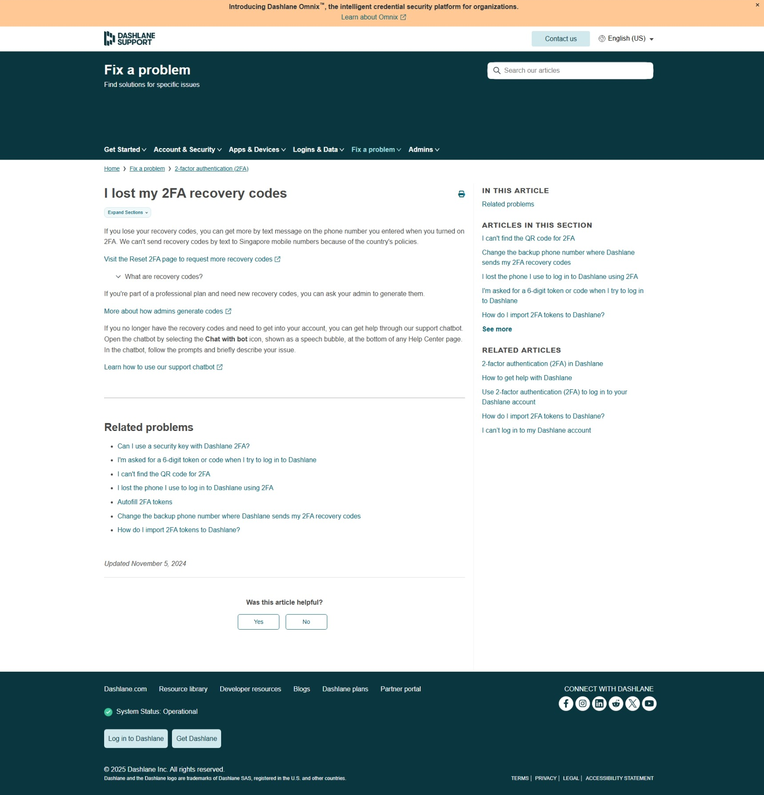
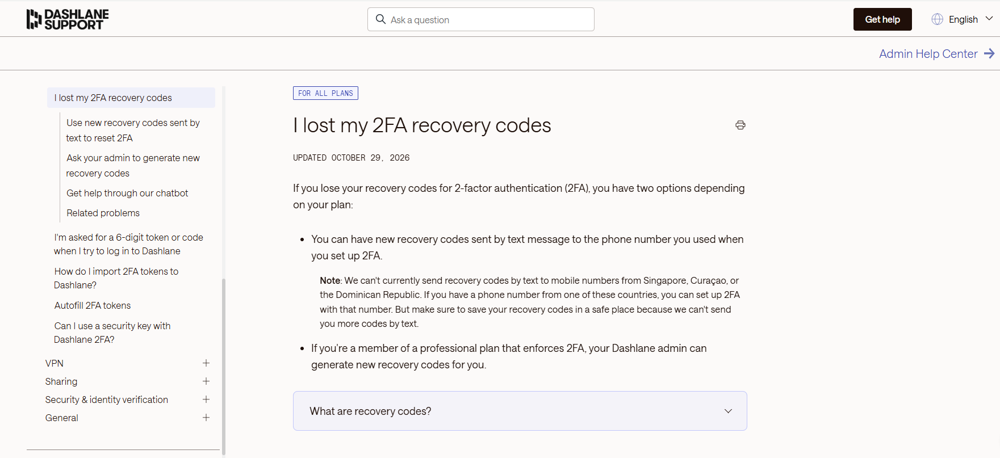
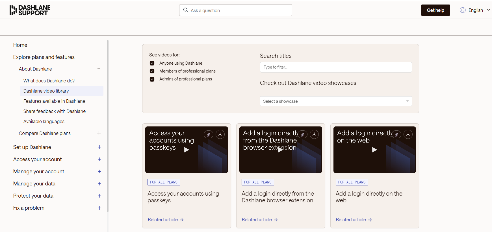

I use content design—structure, layout, and interaction—to help users access the right level of information at the right moment, balancing clarity, engagement, and necessary detail.
Problem: The Help Center needed to reflect Dashlane’s new visual identity and give visitors, especially business admins, clearer ways to find the right content.
Solution: I partnered with a designer to implement the rebrand across the site’s HTML and CSS. We refined typography and interactions and added an AI quick summary and zoomable article images. In the next phase, I led the technical implementation of a sidebar table of contents, audience badges, and a distinct Admin experience within a highly customized Vue component.
Impact: The rebrand and navigation improvements received positive feedback from senior leaders and the creative team. After the new navigation launched, visits to the Admin page increased by more than 300%.
I worked with design and CX content partners on the UX decisions, tested the experience thoroughly, and coordinated the rollout.
Before:

After:

See details
Problem: Support videos were scattered, making them difficult for customers and internal teams to find.
Solution: I scripted a Vimeo metadata feed and built a library page with member-type filters, in-page video playback, and links to related articles. I collaborated with the video specialist to refine the experience.
Impact: The library launched as a centralized resource for customers, Support, Customer Success, and Sales. Later updates improved playback, localization, sharing, and downloads.

See details
Problem: The Help Center structure needed to serve visitors better and be readable by search and AI crawlers.
Solution: I reorganized the Help Center around the processes customers need to complete, making the content easier to follow and easier for AI search tools to understand and surface (GEO).
Details: I built an internal tool to map and share proposals, then planned and validated a new hierarchy of categories and sections. I separated broad articles into focused guides, created a navigation mirror that works without JavaScript, and designed GA4 click tracking to measure the impact.
Impact: Crawled pages rose from 3,380 to 4,280 (about 27%) during the week the navigation mirror launched.
See details